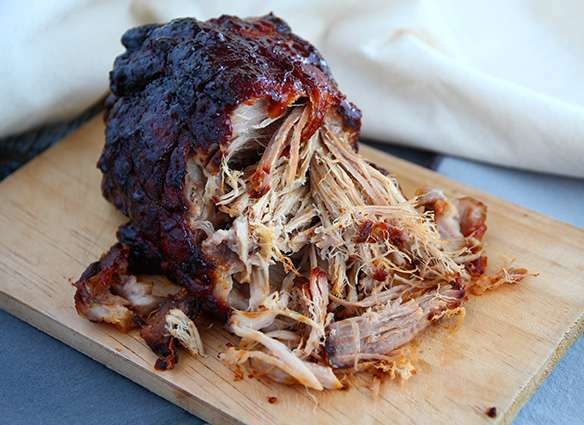

Coffee

You don't need a knife to devour this pulled pork!
What can I say? I love pulled pork. This is a very simple recipe, using an oven instead of a smoker.
This recipe essentially consists of just marinating the pork shoulder, cooking it low and slow and enjoying the fruits of your minimal labor.
Ingredients
- 2 lbs pork shoulder
- 1/2 cup brown sugar
- 1/4 cup salt
- 1 tbsp paprika
- 4 tbsp barbecue sauce
- 1/2 cup water
- 2 bay leaves
Steps
- Mix sugar + paprika + salt + barbecue sauce + water.
- Rub the shoulder with the sauce.
- Put the shoulder in a dish. Pour the sauce on top. Put 2 bay leaves on the meat.
- Bake for 6 to 7 hours at 250°F (120°C) until center reaches 190°F (90°C). Baste regularly while cooking.
- Your pulled pork is ready!
- You can add some sauce to it.
- Enjoy!